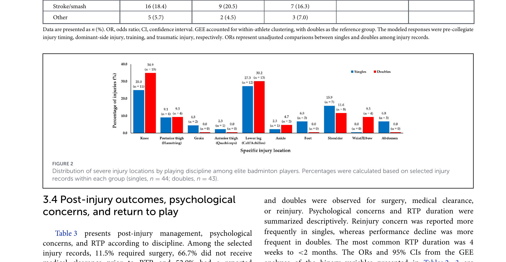
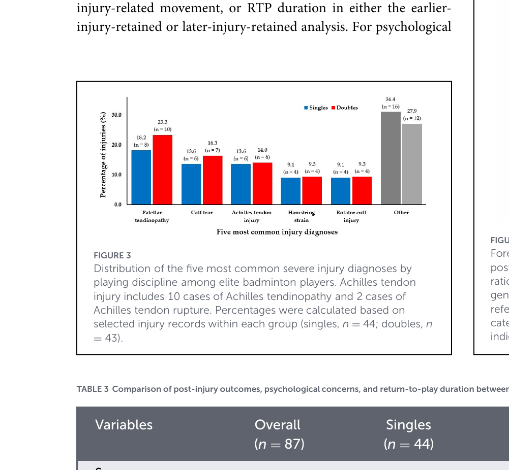

13｜補充：影片回饋、教練溝通與精英嚴重傷病
返回 00_羽球研究總覽；相關章節：05_肌力分析、06_運動行為與運動訓練_vs_筋膜訓練、08_教練實務整合_從研究到課表、09_心理技能與分間例行程序、10_四國研究與制度、11_補充_跨章新增研究。
📌 一分鐘看完
- 影片回饋有用，但證據分散：9 項研究、330 人；發球、高遠、殺球、協調、步法有正向結果，多數技術只有 1–2 項研究；對象多為大學生與初中階。→ 延伸 08 章「影片回饋」。
- 教練溝通：難的球路要「正確做法＋錯在哪＋肯定」一起給；容易的球路給正確動作提示就夠。→ 延伸 08 章動作學習、09 章。
- 比賽中 11 分 60 秒、局間 120 秒的教練溝通，羽球目前沒有任何直接研究。
- 韓國精英嚴重傷（停訓 ≥28 日）：57.9% 曾經有；78.2% 在下肢、64.4% 過度使用；髕腱、小腿肌、跟腱最多。→ 延伸 05 章傷害預防、08 章。
- 復出紀律是最大缺口：66.7% 首次復出前沒有醫生批准，52.9% 有再傷史。
- 單打 vs 雙打大多數比較不顯著；唯一顯著的「單打較多主導側受傷」只是探索性結果。
| # | 研究 | 延伸章節 | 設計 | 證據 | 一句話 |
|---|---|---|---|---|---|
| 1 | Qiu 等 2026 | 08、06 | 系統性回顧（9 項、n=330），質性綜合 | 🟢📄 | 影片／科技回饋對部分技術有利；證據分散、異質 |
| 2 | Manunyanon 等 2026 | 08、09 | 範圍回顧（7 項） | 🔵 | 回饋內容要配合難度；比賽中溝通無直接研究 |
| 3 | Su、Song、Lee 2026 | 05、08、10 | 回顧性橫斷問卷（n=126；87 傷例） | 🔵 | 嚴重傷以下肢過度使用為主；多數未經醫生批准就復出 |
⚠️ 判讀總則
第 1 篇未做統合分析；第 2 篇只是「描述有甚麼研究」，未評品質；第 3 篇是回憶式問卷、只訪問仍在役的精英選手。本章的「教練應用」都是依現有證據推論的合理做法，不是已被證實會減少傷病或提高勝率。
1. 影片／科技輔助回饋（延伸 08 章「影片回饋」、06 章回饋研究）
文獻與出處：Qiu、Soh、Ab Jalil、Ma、Xu、Yue（2026），Effects of video feedback-based training on badminton performance: a systematic review，Discover Psychology，2026-11-07 線上發表。DOI。📄
- 研究方法：依 PRISMA 2020；檢索 Web of Science、Scopus、PubMed、SPORTDiscus；只納入實驗或準實驗研究；隨機試驗用 RoB 2、非隨機用 ROBINS-I 評偏誤。因研究設計、介入方式與量度差異大，只做質性綜合，沒有統合分析。
- 結果：9 項研究、共 330 人。影片／科技回饋在發球與高遠球、殺球相關指標、動作協調、反應與步法、發球準確度有較有利的結果。但多數技術類別只有 1–2 項研究，效果量與一致性參差；偏誤主要來自隨機化、干擾因素與報告不足。沒有研究報告不良事件，但安全結果也沒有被系統評估。
- 結論：影片回饋可能幫助部分技術學習，尤其大學生與初學到中階選手；不足以證明對每項技術都一致有效。
- 教練應用：用手機拍短片段讓選手「看自己」，優先用在發球、高遠、殺球與步法；每次只針對 1–2 個看得到的錯誤，隔幾天再拍一次看有沒有保留（與 08 章「影片回饋」做法一致）。不要當作可以取代多球或對打。
- 判讀界線：只核對期刊頁摘要與 Crossref 書目（作者、期刊、日期），未讀全文；對象以大學生與初中階為主，不能直接推論到高水平或中學前八名選手。
2. 教練對選手的溝通（延伸 08 章動作學習、09 章分間例行程序）
文獻與出處：Manunyanon、Hareebin、Eden、Tawanwongsri（2026），Coach-to-Athlete Communication in Badminton: A Scoping Review of Content, Delivery, and Context，Sports，14(11)，510；2026-11-11 發表。DOI。
- 研究方法：依 JBI 方法與 PRISMA-ScR；預先登錄 INPLASY202690011。檢索 Scopus、PubMed/MEDLINE、Web of Science 至 2026-09-03，另做前向引用檢索。172 筆紀錄 → 去重後 106 → 全文評估 15 → 納入 7 項（2006–2026；希臘、菲律賓、台灣、印度）：2 項場地實驗、2 項問卷、2 項質性、1 項混合方法。只收英文文獻。
- 結果：
- 場地實驗（希臘，10–14 歲男生，各 48 人）：短發球（較易）保留測驗以「正確動作提示」最高（30.04 vs 錯誤提示 25.71、兩者合併 24.02）；長發球（較難）以「合併」最高（39.02 vs 38.40、34.50）。反手高遠（較難）「正向回饋＋正確提示＋錯誤資訊」保留最高（26.75，對照 16.69；各比較 p ≤ 0.008）。
- 問卷（偏好或知覺，不等於實際溝通）：菲律賓 9–18 歲 167 名校園選手最偏好「訓練與指導」（4.47），其次正向回饋（4.07）；台灣 201 名大專選手知覺到的教練自主支持與心理訓練正相關（路徑係數 0.56，p < 0.001），與運動焦慮無顯著直接關係（−0.07，p = 0.388）。
- 質性：台灣大學校隊教練的解釋、個別化糾正、示範與關懷；印度精英女子選手與教練談月經週期時，需要謹慎、保密、先徵得同意的溝通。
- 沒有任何納入研究直接觀察比賽中、11 分 60 秒或局間 120 秒的溝通。
- 結論：羽球教練溝通的證據窄而分散；回饋內容可能要配合技術難度；比賽間歇溝通是最大研究缺口。
- 教練應用：練較難的技術時，不要只講「錯在哪」——把正確做法、錯在哪與一句具體肯定一起講；容易的技術給一個正確動作提示即可。解釋原因、給選擇（自主支持）可以一齊用。11 分與局間可參考其他項目「只講 1–2 句最重要、即時用得著的戰術或心理提示」，但這只是外推，配合 5. 分間與賽前例行程序（法國 FFBaD 學位論文） 使用並自己記錄成效。
- 判讀界線：作者未做品質評級；兩項希臘實驗樣本可能重疊，不能當兩次獨立驗證；只收英文、三個資料庫；問卷研究反映偏好或知覺，不是實際溝通行為。
3. 韓國精英嚴重肌、腱、軟骨傷：單打 vs 雙打（延伸 05 章傷害預防、08 章、10 章韓國）
文獻與出處：Su、Song、Lee（2026），Patterns and management of severe muscle, tendon, and cartilage injuries in elite badminton players: a discipline-based analysis of singles and doubles，Frontiers in Public Health，14:1980850；2026-11-09 發表；開放取用（CC BY）。DOI。原文：羽球專項原文PDF/2026_Su_Song_Lee_Severe_muscle_tendon_cartilage_injuries_elite_badminton_singles_vs_doubles.pdf。
- 研究方法：回顧性橫斷問卷；2026-04-01 至 05-28 在 16 支大學／職業隊面對面訪問。邀請 140 人、完成 126 人（男 61、女 65；單打 64、雙打 62；19–24 歲；國家隊經歷 56.3%）。第一作者任職河南中醫藥大學，但樣本是韓國選手。
- 嚴重傷：停訓或停賽 ≥28 日，且選手自稱經骨科醫生診斷；只計肌、腱、軟骨（不含韌帶、骨折）。
- 主導側：上肢與軀幹以持拍手側計；下肢以最常向前弓步的腳計。
- 復出（RTP）：可以完全參加隊內訓練。
- 結果：
- 終身嚴重傷經驗 57.9%（單打 54.7%、雙打 61.3%，無顯著差異）；73 人提供 87 例選定傷例（單打 44、雙打 43）。
- 下肢 78.2%、過度使用 64.4%、訓練中發生 70.1%；最常聯想的動作是弓步（32.2%）——單複之間均無顯著差異。
- 唯一顯著：未調整 GEE 分析中，單打主導側受傷機會高於雙打（OR = 3.11，95% CI 1.21–7.95，p = 0.018）；單打傷例 81.8% 在主導側，雙打 60.5%。
- 部位（圖 1）：兩組都以膝（單 25.0%、雙 34.9%）與小腿／跟腱（27.3%、30.2%）最多；腹股溝、前大腿、足、腹部只見於單打，腕／肘只見於雙打，但每類個案很少。
- 五大診斷（圖 2）合共 67.8%：髕腱病變 18 例（單 8、雙 10）、小腿肌撕裂 13 例（6、7）、跟腱傷 12 例（各 6；其中 10 例病變、2 例斷裂）、腘繩肌拉傷 8 例（4、4）、旋轉肌袖傷 8 例（4、4）。
- 復出管理：只有 11.5% 做手術；66.7% 首次復出前沒有醫生批准；52.9% 有再傷史（復出後同部位同一傷再發，不一定再停滿 28 日）。復出時間最常見 4 週至未滿 2 個月（43.7%），31.0% 需要 ≥3 個月。
- 心理：沒有人選「沒有顧慮」；單打較多擔心再傷（61.4% vs 37.2%），雙打較多擔心表現下降（51.2% vs 38.6%）——此差異視乎保留較早或較遲那次傷，統計顯著性不穩定。


- 結論：單打與雙打的嚴重傷型態大致相似，都以下肢過度使用的肌腱傷為主；最值得處理的是「未經醫生批准就復出」與高再傷率。
- 教練應用：
- 髕腱、小腿與跟腱是重點：弓步與跳躍落地的負荷要逐步加，配合 05_肌力分析 的肌力訓練與 六、傷害預防：熱身範本。
- 單打可多留意慣用弓步腳與持拍手一側的累積負荷（探索性結果，當提醒，不當定論）。
- 復出要有明確標準（疼痛、功能測試、訓練量逐步加回），不要只憑「看起來可以動」或只問選手覺得可不可以；用 sRPE 監控加量（見 4. 負荷監控：sRPE 效度與減量（延伸 08 章））。
- 單打選手復出時多處理「怕再傷」，雙打選手多處理「怕打得差」——可配合 09 章的心理技能。
- 判讀界線：回憶偏差、倖存者偏差（只訪問現役）、診斷沒有病歷核對、沒有收集受傷當時的主項、沒有量度訓練曝光時間（不是發生率）、未校正多重比較；單複兩組年齡與球齡本身不同但未調整。韓國大學／職業精英，不能直接當成中學生的傷病情況。已讀全文。
判讀界線（本章）
- 第 1 篇標 📄：只核對期刊頁摘要；第 2、3 篇已讀全文（期刊網頁／PDF）。
- 三篇都是 2026 年 11 月新發表，尚未有其他研究重複驗證。
- 「教練應用」中涉及比賽間歇溝通與單打主導側負荷的部分屬推論，需自己記錄試用結果。